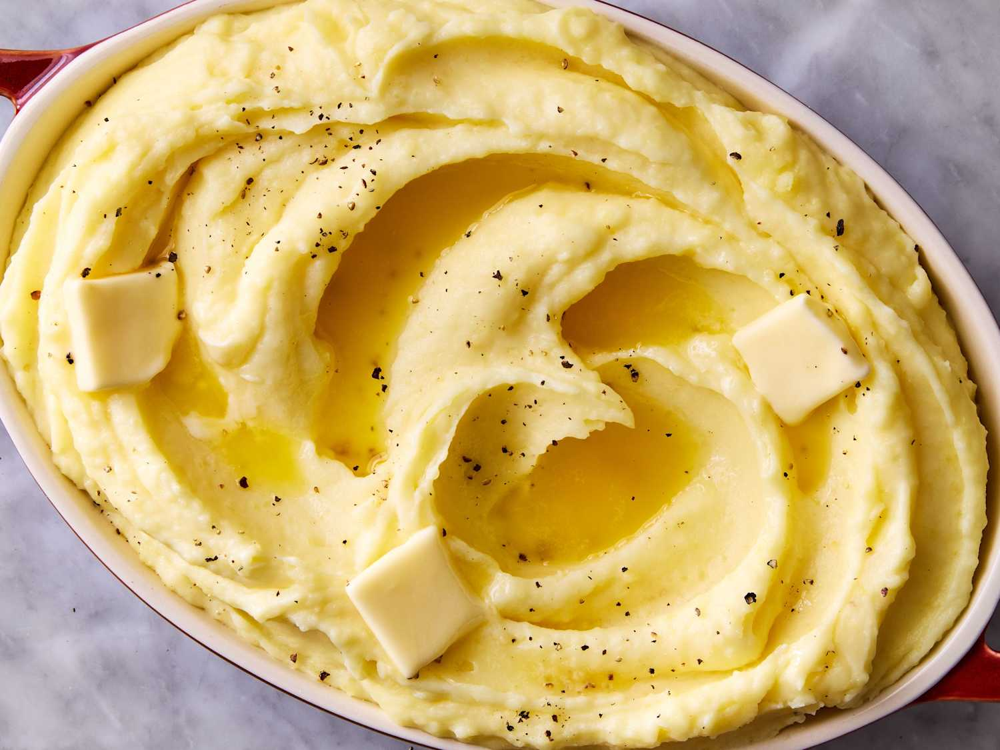

Mashed potatoes are a quintessentially comforting side dish, celebrated for their velvety, smooth texture and rich, buttery flavor. Traditionally made by boiling peeled, starchy potatoes—such as Russets or Yukon Golds—until fork-tender, they are then crushed or whipped to eliminate lumps. Chefs and home cooks alike often incorporate generous amounts of butter, heavy cream, or milk during the mashing process, which imparts a luxurious creaminess and deepens the savory profile of the dish. Seasoned simply with salt and white pepper, they serve as a versatile canvas that complements a wide array of main courses.Beyond the classic preparation, mashed potatoes offer endless opportunities for culinary customization and regional variations. They can be elevated with savory add-ins like roasted garlic, sharp cheddar cheese, crispy bacon, or fresh chives to create a more complex flavor profile. Textures can also range from completely uniform and pillowy to rustic, skin-on smashes that provide a pleasing contrast. Whether pool-mashing a crater of rich gravy during a holiday feast or pairing them with a simple weekday meal, this beloved comfort food remains a staple on dinner tables around the world.